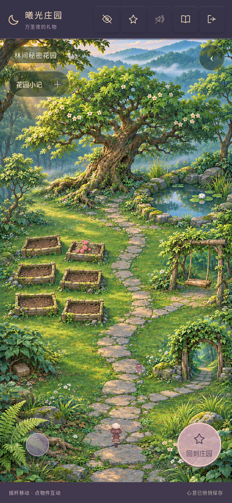
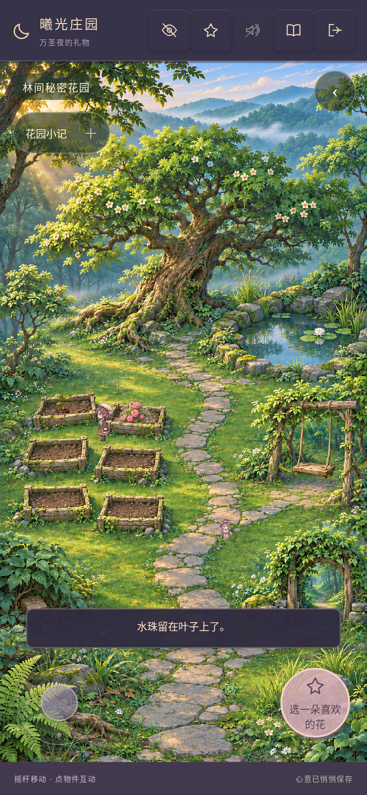
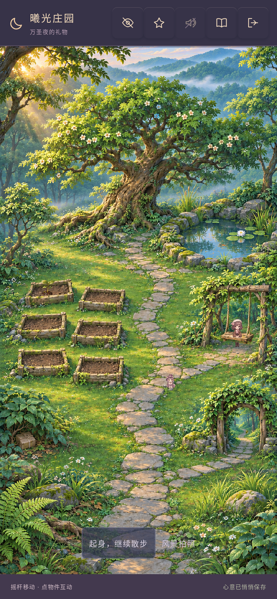
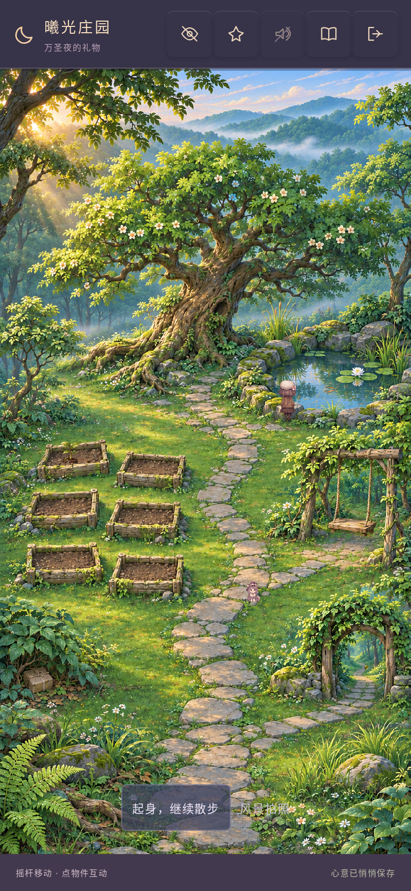

森林深处，留下一座小花园
原创自然主义手绘场景，与现有精细像素人物结合。这里展示的全部画面来自真实运行的 Phaser 游戏。
修改前后

相同 390×844 手机视口、2 倍像素密度、可可服装、清晨、晴天，以及第 2 块已成熟玫瑰花圃。构图、通路及素材以本轮重制为准。四段林间的光
四张分别制作的原画光照：晨间薄雾与斑驳阳光、清透的午后绿意、黄昏侧光和长影、月光照亮的叶缘与池水。不是全屏换色滤镜。
进入方式：庄园地图 → 林间秘密花园。
「花园小记」中可换时光、看花册、调整天气；菜单会自动收起。原有隐藏界面按钮也可以收起所有选项。
真实的种植与休息



素材与保护
背景原生分辨率 887×1774，保留高清 PNG 原件，运行时使用像素逐点一致的无损 WebP。树木、草丛、花圃前沿有独立遮挡层，秋千和鱼的原位置已经清理，不叠加第二套静态物体。
沿用原单存档、六块花圃索引、大树与探索记录。七套服装、花铺交易、自由装修、摸金、糖果、流星雨、独立极光、礼物开场及每日欢迎均保留；本轮只重制花园美术。
验证结果与限制
Chromium、WebKit 的手机视口实测，包含行走、种花、浇水、旧花收获、秋千、池塘、树木及小屏显示；关闭整个浏览器后，开启浏览器断网并使服务器返回 503，再测试四时段、互动、保存和再次重启。
手机性能措施：先显示当前时段，其余空闲预加载；静态原画不降分辨率；粒子固定数量；减少动态设置下停止装饰性运动；离开花园释放专属纹理和对象。
这是手绘景观与现有像素人物的混合风格，部分极细的植物透明边缘仍有进一步细修空间。雨雪是轻量动态层，没有另做暴雨或积雪原画。实体 iPhone 与安卓硬件仍待玩家验收。